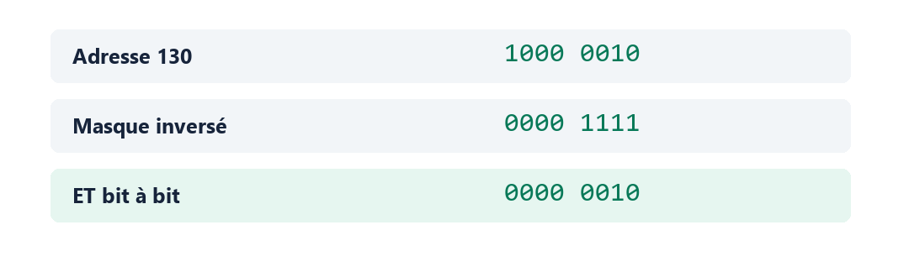

Comprendre le cours
1. Passer des bits aux portes
Un mot binaire est une suite de bits. En non signé, les cases valent 1, 2, 4, 8 et ainsi de suite en allant de droite à gauche. Un bus transporte plusieurs bits en parallèle. Une porte ET calcule 1 si ses entrées valent 1. Une porte OU calcule 1 si au moins l’une vaut 1. NON inverse une valeur. NAND et NOR inversent respectivement ET et OU. XOR vaut 1 quand ses deux entrées diffèrent. XNOR vaut 1 quand elles coïncident.
Un circuit combinatoire calcule sa sortie à partir des entrées présentes. Écris les combinaisons en tableau avant de câbler. Pour trois entrées, il faut huit lignes. L’ordre des lignes aide à repérer les cas oubliés.
2. Additionner et lire la retenue
Un demi-additionneur prend deux bits. Sa somme vaut A XOR B et sa retenue vaut A AND B. Quand A et B valent 1, le résultat exact est 2, qui s’écrit 10 en binaire. La sortie de somme vaut zéro et la retenue vaut un. Un additionneur complet reçoit aussi la retenue du rang précédent.
Une ALU combine plusieurs opérations et un sélecteur décide laquelle produit la sortie. Les indicateurs servent à interpréter le mot obtenu. Zero indique un résultat nul. Carry peut indiquer qu’un bit sort de la largeur du mot. Overflow concerne le dépassement dans l’interprétation signée. Exemple sur 4 bits : 0111+0001=1000 crée un dépassement signé, sans retenue extérieure.
3. Exploiter un masque de bits
Faire un ET avec un masque conserve les bits aux positions où ce masque vaut 1. En réseau, le masque IPv4 marque les bits du préfixe. Son inverse marque les positions de la partie hôte. Le test de la maquette de Logisim calcule IP AND NON(MASK) et vérifie si tous les bits hôte sont nuls. C’est un test d’alignement sur l’adresse du réseau, selon le masque fourni.

4. Retrouver les composants dans un ordinateur réel
Le processeur enchaîne les instructions et l’ALU réalise certains calculs. Les registres gardent les valeurs proches du calcul. Les caches réduisent certains accès à la mémoire principale. La RAM conserve les données des programmes en cours. Le stockage garde les fichiers indépendamment de l’exécution. Une interface matérielle et un pilote relient les périphériques au système.
Pour comparer deux configurations, pars d’un besoin, puis vérifie les compatibilités de connecteur, de format, de génération mémoire et d’alimentation. Le nombre de barrettes ne suffit pas à lui seul à déterminer les canaux actifs. Sous Linux, compare ce que le noyau expose et ce que les outils d’inventaire décrivent.
Du cours aux TD et TP
Questions TD & TP
TP1, partie B · Câbler l’alarme 2-sur-3
Énoncé. Allumer l’alarme si au moins deux capteurs X, Y et Z sont actifs.
- Note 1 pour
011,101,110et111. Les autres combinaisons donnent 0. - Construis
(X ET Y) OU (X ET Z) OU (Y ET Z)avec trois ET et un OU à trois entrées, puis relie la sortie à la LED. - Teste les huit cas. Si un seul capteur suffit à allumer la LED, vérifie que chaque branche avant le OU exige bien deux capteurs.
TP1, parties C et E · Lire résultat et retenue
Énoncé. Construire le demi-additionneur puis tester les opérations et indicateurs des ALU de 4 et 8 bits du TP.
- Relie les deux entrées à une porte XOR pour la somme et à un ET pour la retenue. Avec
1+1, lis somme 0 et retenue 1. - Sur l’ALU, vérifie la légende du sélecteur propre au fichier ouvert. Choisis ADD et prépare un exemple dont tu connais le résultat signé et non signé.
- Sur 4 bits, avec
1111+0001, le mot devient zéro et le calcul non signé produit une retenue. Avec0111+0001, le mot n’est pas nul et la somme signée dépasse la plage. Observe séparément les sorties déclarées par le circuit.
TP1, partie D · Tester une adresse contre un masque
Énoncé. Dans Logisim, réaliser le détecteur IP AND NON(MASK) == 0 sur deux entrées de huit bits, puis vérifier les cas du tableau.
- Règle les pins, le NOT, le AND et le comparateur sur huit bits. Relie d’abord la valeur intermédiaire à un affichage pour la lire.
- Avec
IP=130etMASK=240, l’inverse du masque vaut00001111. Le ET donne00000010, donc la LED OK reste éteinte. - Avec
IP=224etMASK=224, le résultat vaut zéro et la LED s’allume. Si les deux cas donnent pareil, vérifie le masque inversé avant le comparateur.
TP3 · Comparer les composants reconnus et lire des octets
Démarche reconstituée du TP. Identifier le processeur et le stockage sur les deux systèmes, puis expliquer la lecture des vingt premiers octets de /dev/random.
- Relève le modèle de CPU et l’identifiant du lecteur dans les outils d’inventaire du TP. Compare les références plutôt que les noms d’interface, qui peuvent changer d’un système à l’autre.
- Dans le tube du sujet,
head -c 20limite la lecture à vingt octets.odtransforme les octets pour les afficher. Une notation hexadécimale octet par octet s’obtient par exemple avecod -An -tx1. - Vérifie le rôle de chaque processus du tube. Les octets changent entre deux lectures, alors que le nombre demandé reste vingt.